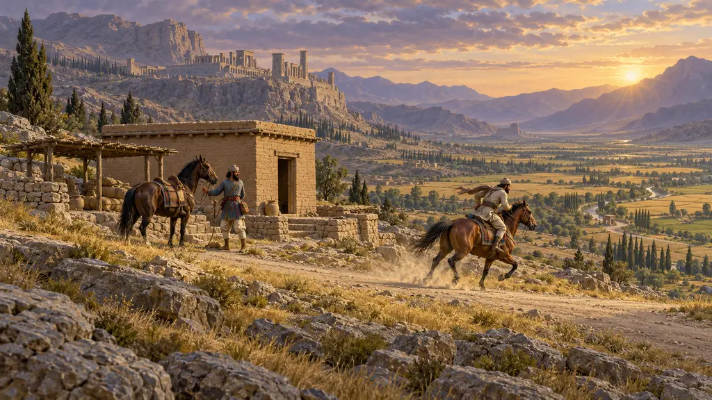
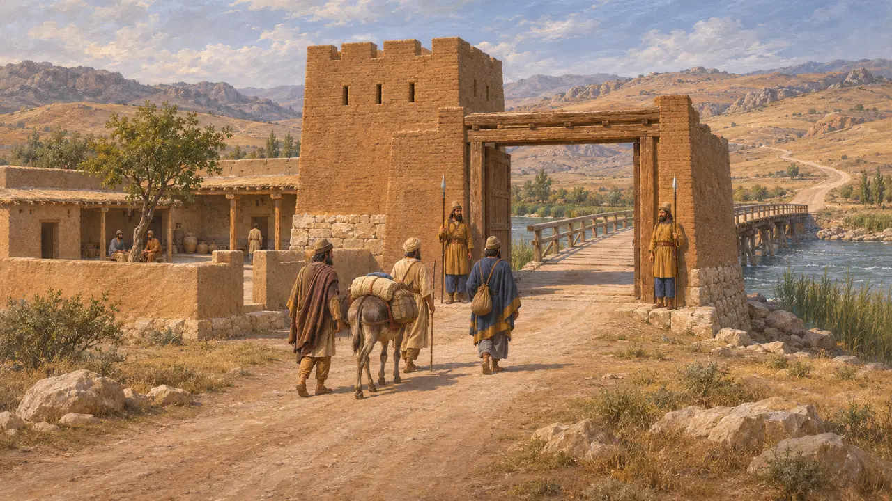
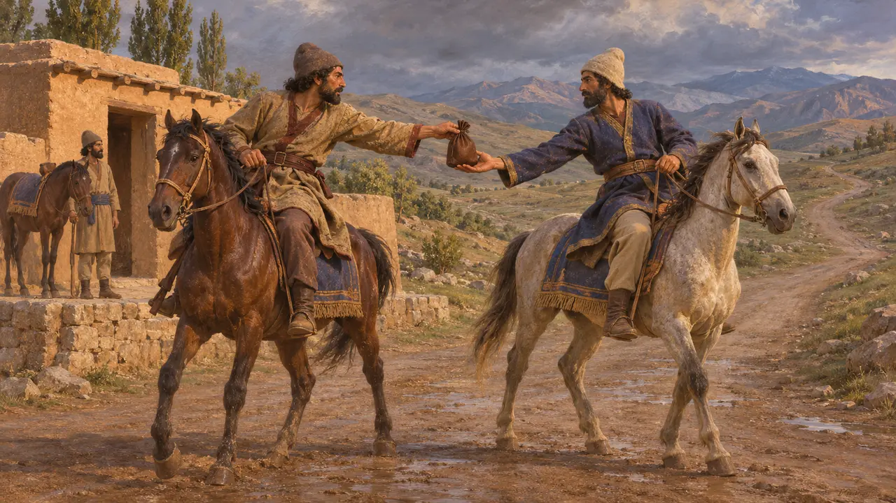
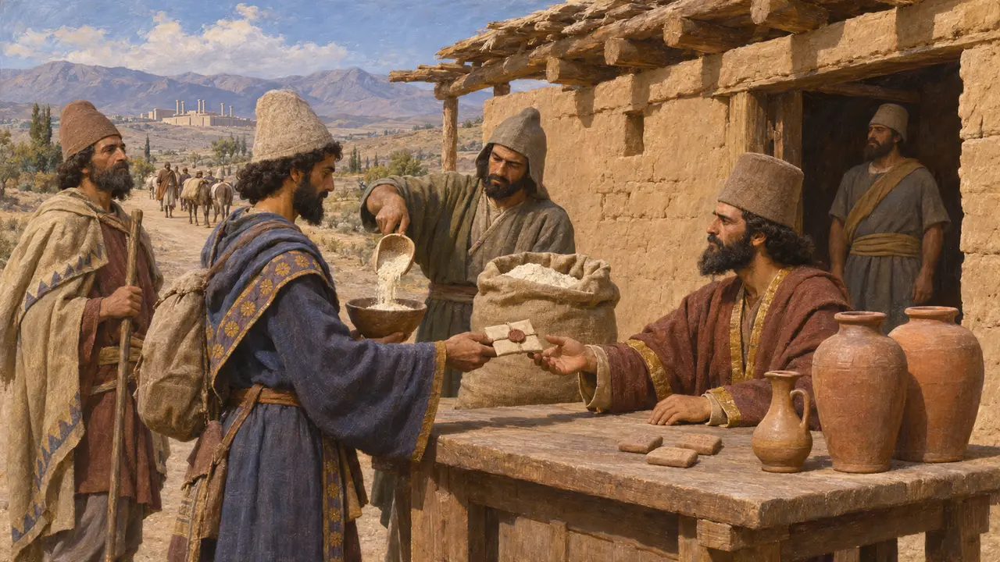
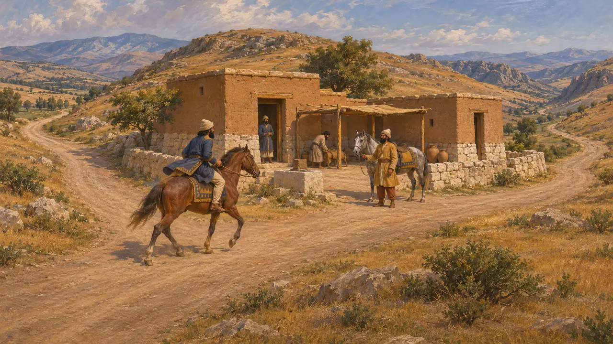
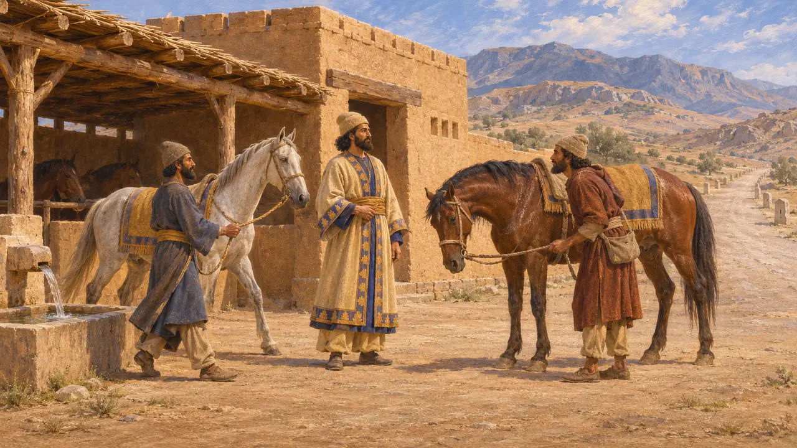

راه شاهی
شاهراه و مسیر چاپاری از سارد تا شوش، حدود 500 پ.م.
راه شاهی راه شاه از سارد در لیدیه تا شوش در عیلام بود که هرودوت آن را با 111 ایستگاه و نزدیک به نود روز راهپیمایی وصف میکند. این راه شناختهترین رشته در شبکهای گستردهتر از راههای نگهبانیشده، ایستگاههای استراحت و انبارهای جیره بود که به کارگزاران، سپاهیان و پیامهای شاهی امکان میداد به فرمان شاه سراسر شاهنشاهی را درنوردند.
در بازی: یادداشت گاهنامهٔ بازی دربارهٔ سفر از سارد تا شوش از هرودوت پیروی میکند: 111 ایستگاه، حدود نود روز راه پیاده، چاپارهای شاهی که دستبهدست میتاختند، و دروازهها و دژی در گذرگاه رود هالیس.

راه به روایت هرودوت
روایت باستانیهرودوت میگوید این راه از سارد آغاز میشد و از لیدیه، فریگیه، کاپادوکیه، کیلیکیه، ارمنستان، ماتیانه و کیسیا میگذشت و به شوش میرسید، با 111 منزلگاه که مسافران در آنها اتراق میکردند. او 450 پرسنگ میشمارد که هر یک 30 استادیون است؛ با 150 استادیون در روز، این راه نود روز پیادهروی میشود، و او سه روز نیز از افسوس تا سارد میافزاید. در گذرگاه رود هالیس دروازهها و پاسگاه نگهبانی استواری برپا بود، و پاسگاههای دیگری نیز در مرز کیلیکیه و در ارمنستان.
Herodotus 5.52-54

چاپارهای دستبهدست
روایت باستانیهرودوت میگوید در طول راه مردان و اسبانی گماشته بودند، یکی برای هر منزلِ یکروزه، و هر سوار پیام را در هر هوایی به سوار بعدی میسپرد. او میگوید پارسیان این خدمت را آنگاریون مینامیدند و هیچ موجود فانیای از آن تندتر نمیرفت. او آن را با مسابقهٔ مشعل یونانیان میسنجد که در آن شعله از دوندهای به دوندهٔ دیگر سپرده میشد.
Herodotus 8.98

جیرهها و برگههای مُهرشدهٔ سفر
در اسنادگلنوشتههای باروی تخت جمشید، که بیشترشان به زبان عیلامی و در حدود 509 تا 493 پ.م. نوشته شدهاند، جیرههای آرد و شراب و آبجویی را ثبت میکنند که در ایستگاهها به مسافران داده میشد. گروهها اجازهنامهای مهرشده از شاه یا یکی از بلندپایگان همراه داشتند و سفرهایشان تخت جمشید و شوش را به سارد، رخج، هند و مصر میپیوست. نامهای آرامی از ارشامه، ساتراپ، در روزگاری پستر نشان میدهد که همین نظام فرمانهای جیرهٔ مهرشده در اواخر سدهٔ پنجم پ.م. هنوز برقرار بود.
R. T. Hallock, Persepolis Fortification Tablets, 1969; Arshama letters (TAD A6.9)

راه دقیقاً از کجا میگذشت
مورد مناقشهفهرست سرزمینهای هرودوت را بهدشواری میتوان بر نقشه نشاند و تاریخنگاران دربارهٔ مسیر آن در آناتولی همرأی نیستند. برخی مسیری از میانهٔ آناتولی ترسیم میکنند و برخی دیگر مسیری جنوبیتر و نزدیکتر به کیلیکیه. دربارهٔ مسیر آن در خاور فرات، و اینکه آیا از نزدیکی اربلا میگذشت یا نه، نیز بحث است. بیشتر پژوهشگران اکنون آن را مجموعهای از راههای نگهداریشده با ایستگاهها میدانند، نه یک شاهراه سنگفرش یکپارچه.
D. F. Graf, The Persian Royal Road System, 1994; P. Briant, From Cyrus to Alexander, 2002

کوروش و روز اسب
افسانهٔ متأخرگزنفون میگوید کوروش پس از آنکه دریافت اسب در یک روز چه مسافتی را میتواند بپیماید، دستگاه چاپار را بنیاد نهاد و در همان فاصلهها ایستگاههایی با اسب و مهتر برپا کرد. کوروشنامه چهرهای آرمانی از کوروش است که بیش از یک سده بعد نوشته شده، پس این انتساب را نمیتوان سنجید. اسناد بازمانده از این دستگاه به دوران پادشاهی داریوش بازمیگردند.
Xenophon, Cyropaedia 8.6
منابع
- Herodotus 5.52-54
- Herodotus 8.98
- R. T. Hallock, Persepolis Fortification Tablets, 1969
- D. F. Graf, The Persian Royal Road System, 1994
- P. Briant, From Cyrus to Alexander, 2002
- Xenophon, Cyropaedia 8.6